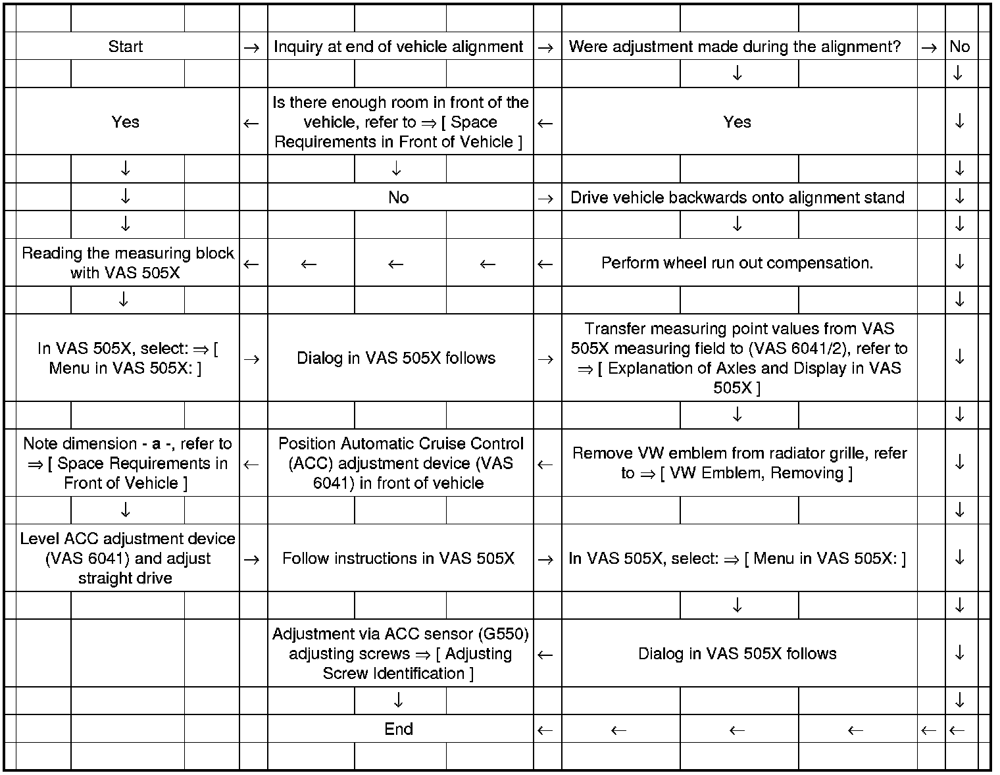
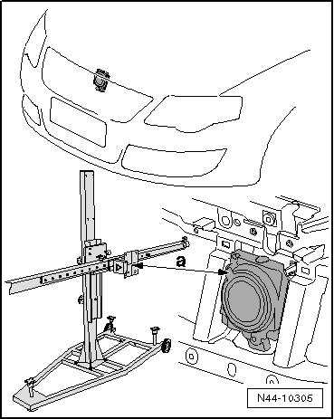
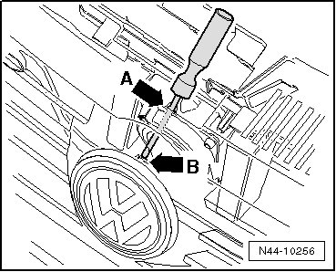
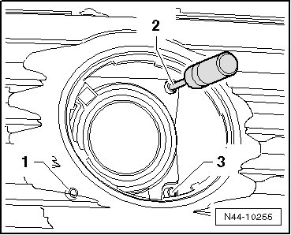
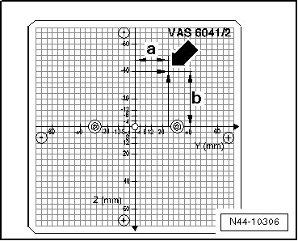

Adaptive Cruise Control Calibration with Vehicle Alignment
Adaptive Cruise Control Calibration with Vehicle Alignment
Observe the following work sequence!
- Observe the notes in your alignment unit and specifications in general information. Refer to --> [ Adaptive Cruise Control Calibration ] Description and Operation.
Measuring Procedure

Space Requirements in Front of Vehicle

Distance - a - = 1145 mm
Distance - a - is distance between ACC sensor (G550) mirror and ACC adjustment tool (VAS 6041) measuring field.
• If necessary, use precision spoiler adapter (VAG 1813/12) to equalize height between ACC adjustment tool (VAS 6041) and vehicle alignment platform.
VW Emblem, Removing

- Guide a screwdriver through opening - arrow A - and press tab - arrow B - downward.
- Remove VW emblem.
ACC Sensor (G550) Adjusting Screw Identification

1. Horizontal or measuring block 6-2 adjusting screw, refer to --> [ Explanation of Axles and Display in VAS 505X ]
2. Vertical or measuring block 6-3 adjusting screw, refer to --> [ Explanation of Axles and Display in VAS 505X ]
3. Must not be turned - functions only as a pivot point
Explanation of Axles and Display in VAS 505X

Y Measuring block 6-2
X Measuring block 6-3
Example
Value 0.1 corresponds to 4 mm on (VAS 6041/2)
With a measuring block 6-2, display in VAS 505X shows a value of 0.6 and measuring block 6-3 a value of -1.0.
These values lead to a measuring point - arrow - that consists of the following values:
- a - = 24 mm
- b - = 40 mm
Menu in VAS 505X:
- Press the following buttons on the screen one after the other:
• Suspension
• Distance Control
• 01 - On Board Diagnostic (OBD) Capable Systems
• Function
• Adaptation to adjustment on alignment stand